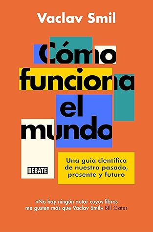

Cómo funciona el mundo: Una guía científica de nuestro pasado, presente y futuro (Spanish Edition)
Reseña por Jorge I. Zuluaga

Ver reseña en GoodReads (necesita cuenta)
Pero ¿Cuál realidad?
La realidad de nuestra dependencia de -¿o deberíamos decir "adicción a"?- los sucios combustibles fósiles; la realidad de que ahora hay en el mundo demasiados bocas para alimentar, de que una significativa parte de la humanidad vive en las condiciones que vivían los países desarrollados hace más de 50 años y quiere tener hoy la comodidad de la que gozan -o gozamos- las personas más privilegiadas; la realidad de que lo que haga China -un país con un solo partido político, con la mayor cantidad de multimillonarios del mundo y con miles de millones de personas que quieren vivir al estilo europeo o gringo, es decir conduciendo SUVs, haciendo turismo internacional, comiendo carne en abundancia- determinará lo que pasará en gran medida con el planeta en las próximas décadas. La realidad del absurdo de pensar que tenemos escapatoria saliendo de la Tierra para habitar en otros planetas, o de la irreversible destrucción de la biodiversidad, o de la permanencia por siglos del CO2 emitido y de que tendremos que esperar muchas décadas, incluso después de que controlemos las emisiones, para que ese gas empiece a absorberse. La realidad de que es más probable morir viajando en un carro al trabajo que por culpa de un terremoto, incluso si vives en un país de alto riesgo sísmico como Japón; la realidad de que nuestra percepción del riesgo es muy distorsionada cuando se la compara con la cuantificación objetiva de esos mismos riesgos.
Podríamos seguir por muchos párrafos resumiendo algunas de las conclusiones a las que llega Smil en este libro.
Este es mi tercer libro de Vaclav Smil y empiezo a acostumbrarme apenas a su estilo.
Muchas personas lo encontraran bastante árido. Así lo pensé yo al principio, y esta es la razón para no darle las 5 estrellas que creo debería darle por la calidad de su contenido. Esas 4 estrellas son una advertencia para quiénes quieran meterle el diente. Deben prepararse para párrafos enteros llenos de datos numéricos, a veces apenas comprensibles si no te detienes con una calculadora o una hoja de cálculo -y tal vez un libro de física- para estudiar mejor su significado.
Pero no todo el libro es así, y eso hace que valga la pena el sacrificio de leer algunos de los pasajes más áridos.
En particular el último capítulo, en el que Smil presenta algunas de sus reflexiones más generales sobre las consecuencias de sus sesudos y cuantitativos análisis del resto del libro, definitivamente hace que valga la pena, a la larga, el sacrificio de leer el texto completo.
El libro me dejo algunos sentimientos encontrados sobre el futuro. También me produjo un poco de remordimiento por las posiciones extremas que había asumido en el pasado acerca de cómo resolver el tremendo quilombo en el que nos hemos metido como la especie -o debería decir la "fuerza geológica"- que tiene hoy en jaque el equilibrio de la biósfera.
El texto se divide en 6 partes principales en las que Smil presenta una versión muy suya, pero toda basada en ciencia comprobada -al menos como pude verificar en los apartes de física que mejor conozco por ser mi especialidad- sobre cómo funcionan distintos aspectos del "mundo" en el que vivimos, a saber la energía, la alimentación, las materias primas, la globalización, los riesgos y el medio ambiente.
Con su estilo muy particular de usar datos cuantitativos detallados, tales como cuántos giga joules necesita una persona para pasar el día, cuántos litros de diesel se necesitan para que puedas preparar un ensalada -una dolorosa unidad que inventa Smil para hacernos caer en cuenta de nuestra maldita dependencia de esta sustancia-, cuántos millones de toneladas de concreto produce al año China, cuántas personas se transportan en avión en un años y a dónde van, cuál es la probabilidad de que mueras al lanzarte de un paracaídas, por el impacto de un rayo o de cáncer de páncreas, en qué año podrían las medidas de control de las emisiones empezar a reportar beneficios y por qué la mayoría de quiénes estamos vivos no viviremos lo suficiente para verlo, Smil logra convencernos, o al menos es lo que se propones con su incisivo estilo, de que no podemos comprender el mundo en el que vivimos si no lo analizamos justamente a la luz de datos numéricos concretos.
Los dos primeros capítulos (energía y alimentos) parecen escritos con la agenda de la industria de los combustibles fósiles. Me desanime un poco al empezar a leerlos y pensé que el autor básicamente le estaba haciendo el juego a esa multimillonaria industria que hoy sabemos tiene gran parte de la responsabilidad por la desestabilización evidente de la biósfera. En esas páginas, esencialmente, Smil demuestra que estamos irremediablemente atados -por lo menos en el presente, pero esta idea es mía y no de Smil- a los hidrocarburos que extraemos del subsuelo. Estas sustancias, argumenta Smil, son la base, no solo de la mayor parte de la energía primaria que se consume en el planeta, sino también de la inmensa mayoría de las sustancias químicas claves -empezando con fertilizantes hasta llegar a los materiales con los que se fabrican las herramientas- con las que producimos los alimentos para 8000 millones de personas.
Todavía me resisto a creer que nuestra dependencia sea tan profunda. Pero soy científico y no puedo negar que los datos que presenta Smil, y que sé que se podrían confirmar revisando en profundidad las abundantes referencias que cita, lo confirman sin reservas.
En un momento dado estuve a punto de abandonar el libro justamente porque sus conclusiones conducen a pensar de que abandonar los combustibles fósiles será una tarea más difícil de lo que creemos. No solo la disonancia cognitiva con mis convicciones que esta conclusión me producía, sino también el desanimo que genera, estuvo a punto de hacerme perder de los puntos más interesantes, algunos de ellos bien alineados con la visión que sostenemos muchas personas hoy de que puede existir un mundo sin esa dependencia fatal, y que Smil presenta hacia el final de ambos capítulos (el de energía y alimentación).
Sí, Smil parece en muchas páginas de este libro un autor vendido. Sin embargo lo compensa rápidamente mostrando que hay caminos para resolver el problema, sino totalmente al menos parcialmente el problema. No puedo asegurar categóricamente que Smil no haya sucumbido a los intereses de la industria petroquímica -o de que haya recibido subvenciones, disculpen si esto parece paranoide-, pero el tono general del resto del libro me da a entender, o me hace sospechar, que estamos simplemente ante un científico sin pelos en la lengua y con pocos compromisos ideológicos que le permiten analizar menos este tema con menos apasionamientos con respecto a cómo lo hacemos la inmensa cantidad de científicos que estamos preocupados por el problema.
¿Me deje entonces convencer por Smil de que estamos condenados a seguir extrayendo Carbono del subsuelo para seguir llenando la atmósfera de CO2 y otros gases de invernadero con el único propósito de que más de 8000 millones de humanos vivamos unas condiciones de vida que creemos son las únicas condiciones dignas para vivir? Por supuestos no. Pero lo que creo ahora, definitivamente quedo matizado por los datos que encontré en "Cómo funciona el mundo". Por eso mismo creo que es un documento que vale la pena leer con cuidado.
Otras cosas me llamaron la atención. Creo que en este libro Smil ha bajado el tono muy escéptico con el que criticó, en otros libros suyos, a la fisión nuclear. Esto, viniendo de un autor como él demuestra aquello de lo que muchos estamos convencidos hoy, es decir, que la energía nuclear será clave para la transición energética, para reducir nuestra dependencia, al menos en lo que corresponde a la producción de energía primaria, de los combustibles fósiles, es esencialmente correcto.
No quiero terminar esta reseña sin la que creo es la principal crítica que podría hacerse a este libro desde una perspectiva científica más amplia: la casi total ausencia de un análisis desde las ciencias humanas y sociales de la problemática actual. Es casi como si Smil creyera, una actitud muy frecuente en las personas que venimos de las ciencias físicas o de la tecnología, que "el mundo" esta hecho únicamente de flujos de energía y de materia. Como si las intenciones, los sesgos, la ambición, las ideología, la superstición, los sistemas de creencias, pero también la bondad, la felicidad, la empatía, el afecto que experimentamos los animales humanos y otros animales con los que habitamos, no tuvieran también un efecto significativo en esos flujos de energía y materia que obviamente son muy reales. Excluir todo esto de la "ecuación" creo que es un inmenso error y podría poner en jaque las conclusiones más importantes.
Tampoco creo que Smil sea ajeno a estos aspectos del "mundo" o que en el fondo no acepte que son muy importantes. En algunos apartes de su análisis hace referencias específicas a los aspectos sicológicos de los problemas que discute, por ejemplo cuando analiza las expectativas que tenemos sobre el riesgo o las visiones apocalípticas o tecno optimistas sobre el mundo que critica por igual. Pero por su especialidad técnica no creo que pueda llegar a incluir pronto de forma realista esos aspectos en sus análisis.
Abordar la pregunta de "cómo funciona el mundo" debe hacerse con una mirada múltiple, no solo desde las ciencias físicas y la técnica, sino también desde las ciencias humanas; incluso a través de otras manifestaciones intelectuales en las que la intuición juegue un papel importante, tales como el arte o los sistemas de creencias. El mundo, nuestro mundo, es mucho más que flujos de energía y materia y necesitamos la experiencia combinada de muchos humanos para desenredar los problemas en los que andamos metidos.
¿Quieres entender cómo realmente funciona el mundo? Tal vez hagan faltan muchas especialidades y una vida para hacerlo. Pero leer este libro puede ahorrarte un par de años de errores infructuosos. Léanlo.